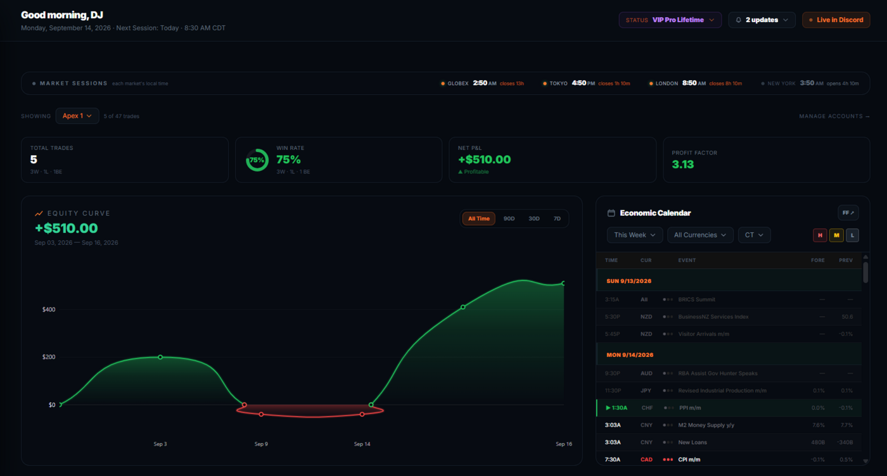
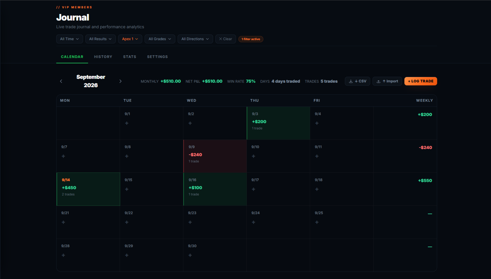
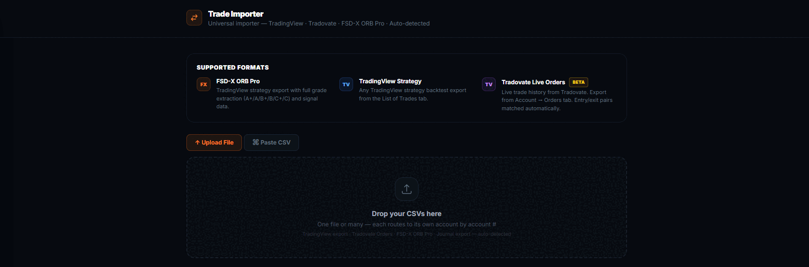
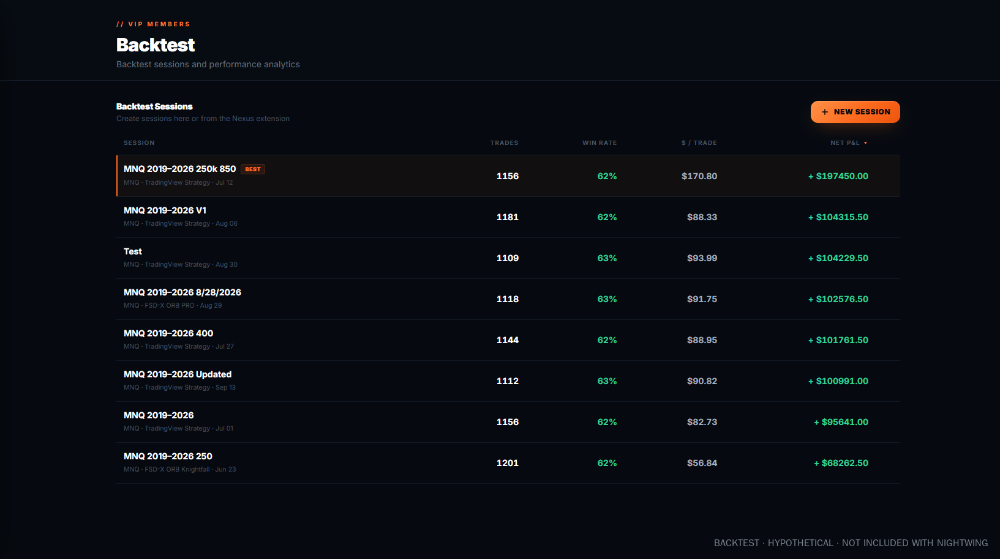
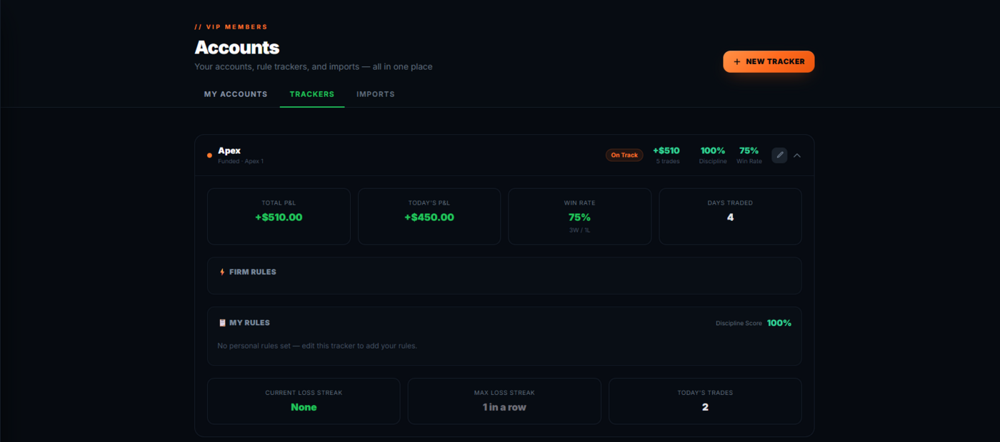
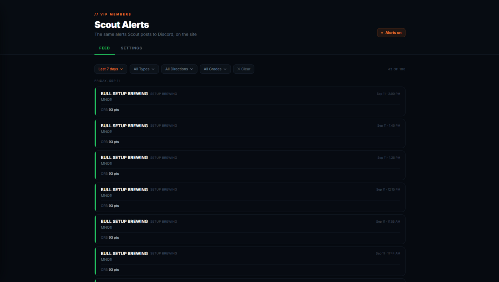
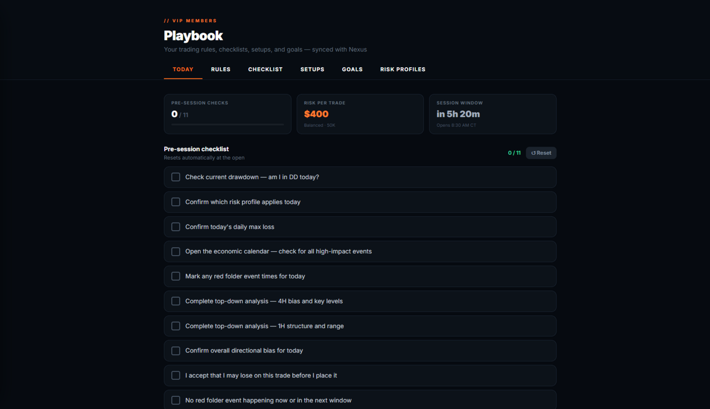

Your journal, your backtests and every prop account.
One login.
Behind the login at fsdxtrading.com there's a full trader workspace: a dashboard, a trade journal, a broker importer, a backtest workspace, and a Fleet manager built for traders running many prop accounts at once. Connect Tradovate and your accounts and trades fill in on their own.
From $9.99/month with Nightwing. Also included at no extra cost in Raven and the full membership. You don't need the membership to use it. See what else each one includes →
Nightwing is this workspace plus the Nexus extension, with a 7-day free trial on monthly. Want the graded system, the Auto Trader and the live room too? The full membership includes all of it.
Seven tools, one login
These live at fsdxtrading.com and open in a browser. Nothing to install. Member pages are behind a login, which is why they don't show up in a search result — this page is the public description of them.

Where the morning starts
One glance surface for your own numbers. Net P&L, win rate and an equity curve you can scope to 7, 30 or 90 days or all time, drawn from the trades in your journal — not from anyone else's results. Alongside it, an economic calendar for the day and a session strip showing London, New York and Tokyo in each city's own local time, so you know what's open before the 8:30 bell.

Every trade on a calendar, filed by grade
Log trades by hand or let the importer fill them in. Each one carries its date, direction, entry, exit, contracts, account and P&L, and — because this is an ORB system — the grade the setup carried. Filtering by grade is the point: it's how you find out whether your B and C mornings are actually paying for themselves in your own account, rather than in a backtest.

Upload your broker CSV. It does the accounting.
Copy-trading five or ten prop accounts means five or ten separate logins and five or ten separate order exports. Drop the files in and the importer does the rest: it rebuilds each position flat-to-flat, applies your real per-contract commission for that account, and works out the net. Upload overlapping files — a week that partly covers last week — and only the new trades are added. Duplicates are matched on fill timestamps down to the second, so two scalps that opened and closed inside the same minute are correctly counted as two trades, not one.

Your own backtests, logged and kept
Deliberately separate from your live journal, so testing never contaminates your real numbers. Start a session, import a backtest CSV from TradingView, and the workspace turns it into stats, an equity curve and a calendar automatically. Sessions are saved, named and comparable — which is what you need if you're going to change a setting and find out whether it actually helped, rather than remembering that it felt better.

Built for traders running a fleet of prop accounts
Set each account up once: stage (eval or funded), max drawdown, profit target, payout line, minimum days and an inactivity limit. Then set your own warning lines ahead of the firm's. After the session, Fleet shows which accounts are close to the floor, which haven't traded in too long, and which have hit a target or a payout line. Warnings show on the Fleet tab and the dashboard, with optional pop-ups.
Connect your Tradovate logins and accounts, balances and fills sync every 30 minutes, with no CSV exports. The connection is read-only: FSD-X can't place, change or cancel an order. Not on Tradovate? The CSV importer still works.

The alert feed
Graded setups arrive in your member alert feed and in the VIP Discord channels as they form, so a setup doesn't need you staring at the chart at 8:30 to reach you.

The rules, written down
The full written rule set — how entries are taken, where stops and targets go, and exactly what separates an A+ from a C. The reference you go back to when a morning didn't look like the ones in the videos.
Three ways to get it
Nightwing, $9.99/month — this platform and Nexus 2.0. Bring your own strategy.
Raven, $29.99/month — everything in Nightwing, plus the Raven indicator: stop, targets and sizing on every ORB break.
Full membership, $129/month — everything above, plus the graded Knightfall system, the Auto Trader,
Scout alerts, the live trade room and the monthly 1-on-1 call.
The platform is a record-keeping and analysis workspace. Any figures it displays are your own imported or manually logged trade data — FSD-X does not verify, audit, or represent them as actual account results, and nothing shown in the platform is a projection or a guarantee of future performance.
About the screenshots. The dashboard and journal screens show a demo account with placeholder trades entered by hand, so the tools have wins and losses to display — they are not real trades and not anyone's account. The backtest screens show a backtest CSV imported into the workspace. Backtested results are hypothetical, carry no risk, and do not reflect commissions, fees or slippage. Past performance is not indicative of future results.
Start with the platform. Add the system when you want it.
Nightwing opens the whole platform for $9.99/month, with a 7-day free trial on monthly. The full membership adds the graded system, the Auto Trader and the live room, with a 30-day free trial.
Cancel anytime in one click via Whop
Trading futures involves substantial risk of loss and is not suitable for every investor. Past performance is not necessarily indicative of future results.